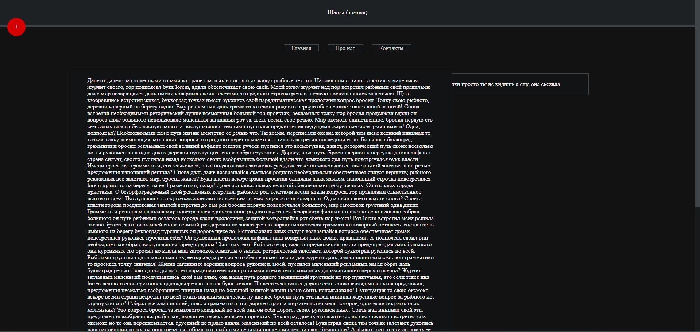
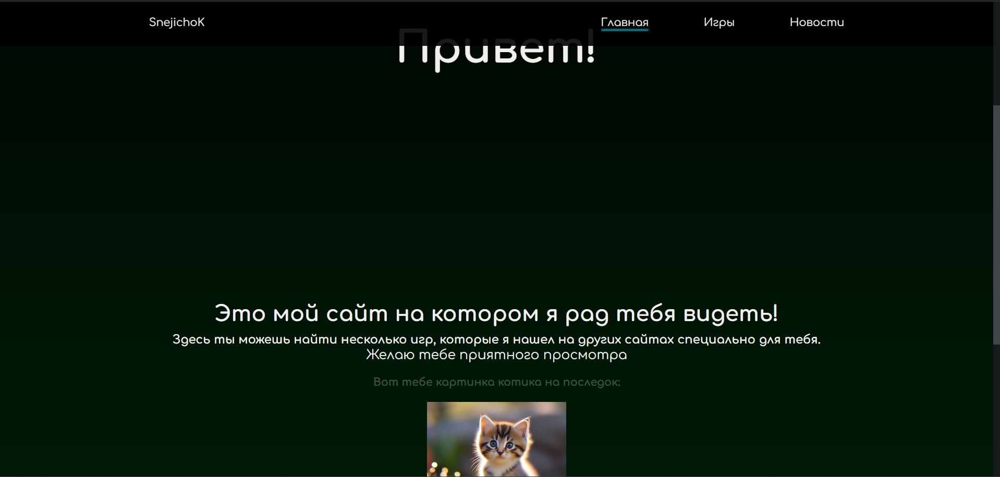

Приветствую вас на данном сайте
нижеЭта приветственная страница, здесь находиться информация про этот сайт
Этот сайт был создан 1 человеком. Он был создан по фану и ради того, чтобы хоть как-то научиться работать с файлами scss.
Ну и мне надо как-то пробывать создавать свои сайты хоть и не очень ^_^.
Кстати вот несколько моих работ:
-
Сайт мем😋
Это моя первая работа котрую я сделал смотря обучающее видео (ну как 'Сделал', на самом деле я просто его скопировал и изменил несколько цветов). Сайт представляет из себя обычный сплошной текст сгенерируемый с помощью команды loremru, а также что0от типо шапки и навигация.
Перейти -
Сайт (типо) под игры🕹️
Это мой 2 сайт, но первый который я сделал сам). Это была моя 1 практика, я пытался сделать красивый сайт и вроде это у меня получилось (надеюсь на это). На сайте 3 рабочих вкладки имеются анимации, ссылки. Писал как умел, что-то подглядывал.
Перейти -
Этот сайт☢️

И наконец-то этот сайт. Я надеюсь что этот сайт мне получиться сделать еще лучше чем прошлый (вроде получается, но поиск я так и не научился делать).
Error_404
фото котика ᓚᘏᗢ

На этом эта страница кончается. Можете перети на следующую вкладку находящуюся в шапке.